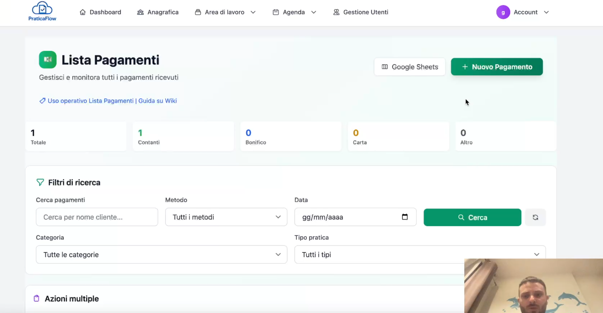

Lista Pagamenti in PraticaFlow: incassi e scadenze sempre sotto controllo

Con la Lista Pagamenti tieni traccia di incassi, scadenze e importi collegandoli a clienti e pratiche. Vedi subito chi ha pagato, cosa manca e cosa scade a breve.
Filtri rapidi, export e storico completo ti danno un bilancio chiaro e aggiornato, utile sia a chi lavora sulle pratiche sia a chi segue l’amministrazione.
Cosa puoi fare nella Lista Pagamenti
- Registrare incassi con metodo di pagamento, importo, data e note.
- Collegare ogni pagamento a cliente e pratica corretti.
- Filtrare per stato (pagato/non pagato), scadenza, cliente, operatore.
- Esportare movimenti per reportistica e contabilità.
- Vedere lo storico completo degli incassi per ogni pratica.
Routine consigliata per non perdere incassi
- Filtra per scadenze imminenti e contatta i clienti in ritardo.
- Registra gli incassi del giorno e allega la ricevuta quando serve.
- Controlla le pratiche con pagamenti parziali per chiudere i residui.
- Esporta a fine mese il report pagamenti per la contabilità.